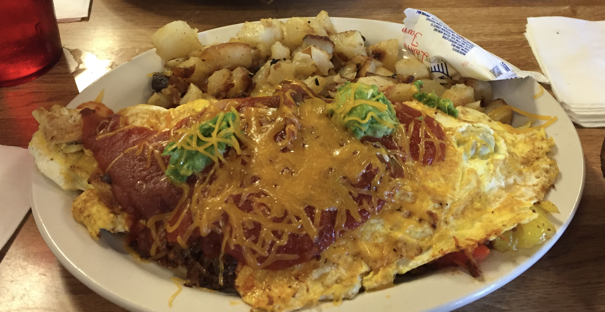
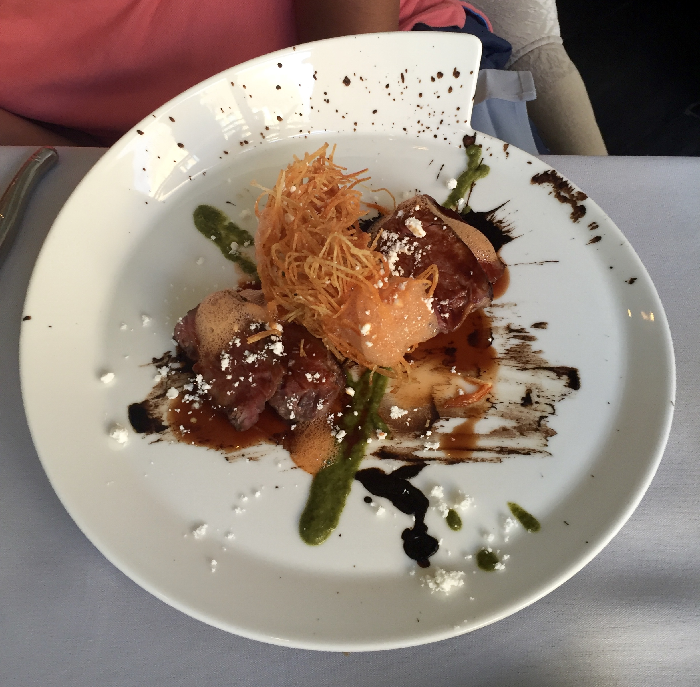
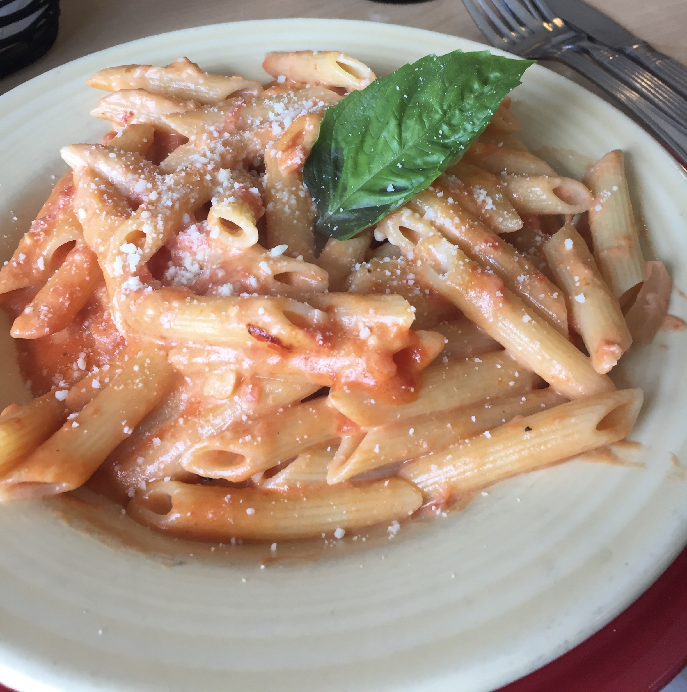
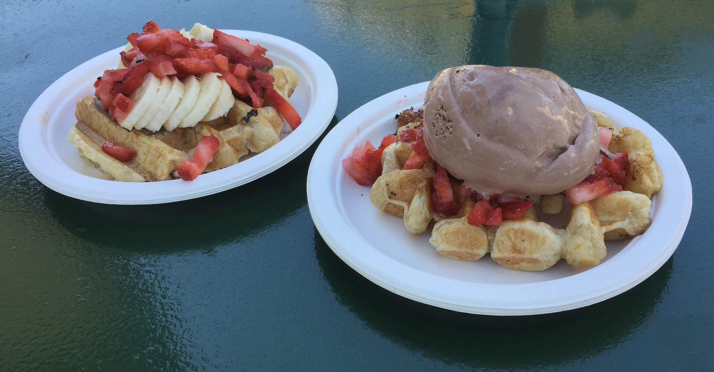
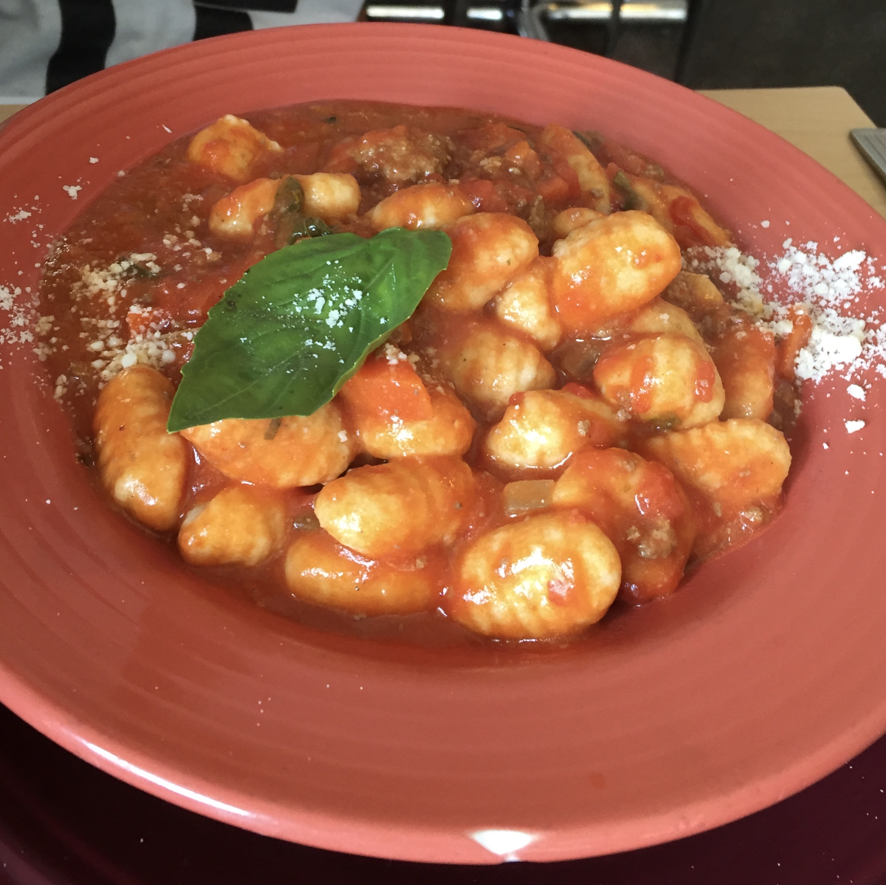
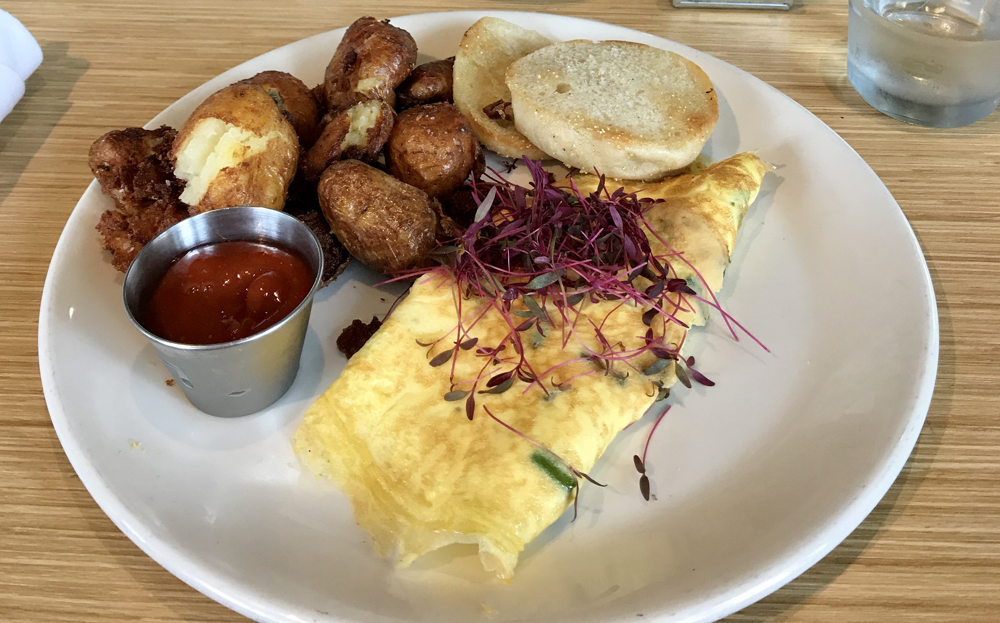
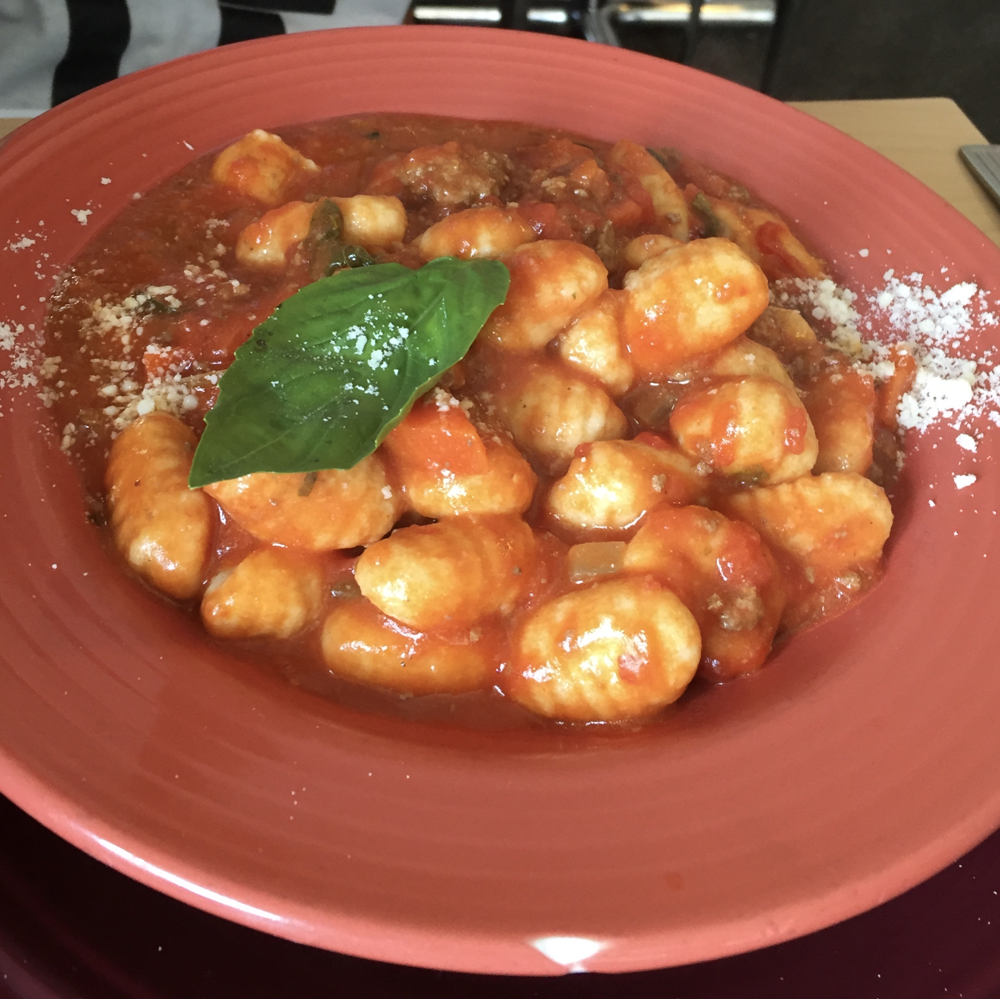
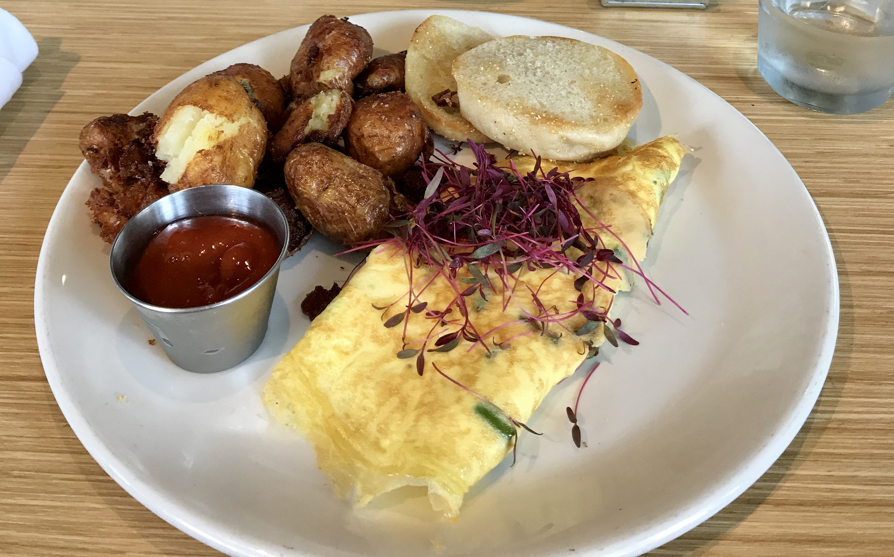

A Guide for College Foodies
The Final Product I Envision

I want to create a platform for college students to find different restaurants, cafés, desert, and snack joints in the Pittsburgh area. This website will serve as a one-stop shop to to find the perfect place to indulge any college foodie. I hope that it will be a collaborative platform for college students to interact, share suggestions on menu items to order as well as their overall ratings of restaurants through a comments section.
Why I Want to Create This
I am a Univeristy of Pittsburgh senior who is origininally from a suburb of Pittsburgh called Wexford.
Growing up, my family always loved exploring the city and its surrounding suburbs, lookimg for new and unique restaurants to try out.
We never really had one place online to be able to find a restaurant from an organized list.
I would like to present this idea to make it easier for people, especially college students, to be able to navigate the city and try out new and unique places and satisfy their foodie cravings.




 



Possible Website Details
In terms of dividing up the content, I envision a menu bar on the home page featuring the following categories:
(for us to explain why and how we decided to create this platform)
(for college students who want affordable options)
(for that expensive, boujee meal)
(featuring Breakfast, Brunch, Lunch, Dinner, Dessert, and light snack options)
Once a foodie has selected from the menu bar, there will be a list of eating options that will come up based on the category.
There will be a link to the place's website if they have one, phone number, hours of operation, a map to view the place's location, and a few pictures of the restaurant and food they serve there.
There could also be a comments for each option for college students to leave reviews or suggestions on what to order.
Possible Tasks and Roles
These are a list of tasks that may be needed to launch our website:
- Figure out lists of restaurants for each menu bar category
- Find information on each restaurant that will be featured
- Create a theme for the website, incorporating design elements organization, alignment, contrast, etc.
- Decide on common website colors, typeface, etc.
- Draft an About Page discussing purpose of website and pictures of food and college students eating
- Create Comments section for each restaurant
- Draft Home Page with restaurants offering specials and deals for college students, grand openings, etc